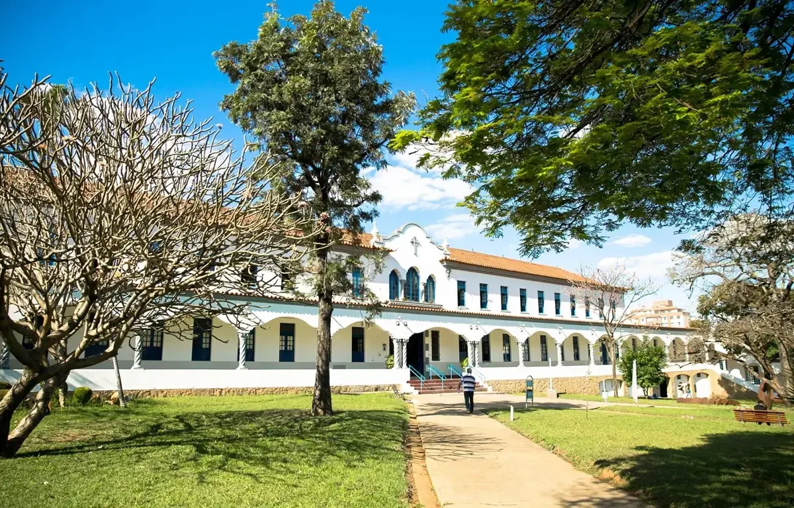
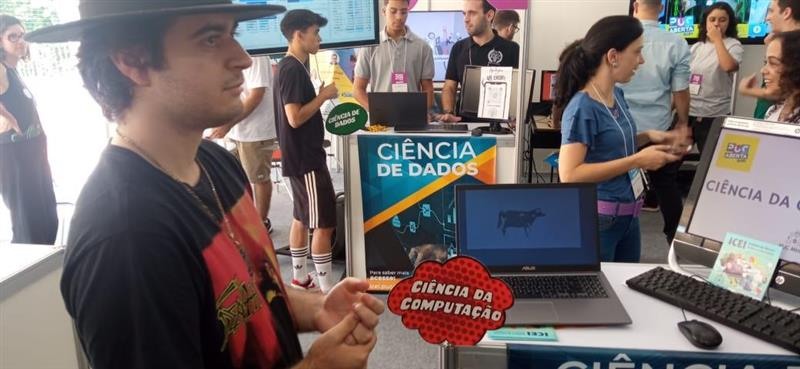
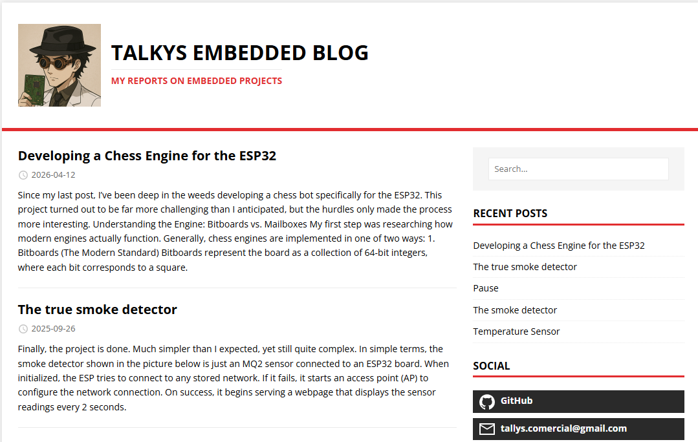

About me
I am a software engineer focused on building reliable, high-performance applications and scalable distributed systems. While my main expertise lies in backend development, database architecture, and frontend design, my work spans complex technical challenges, from writing high-performance ETL pipelines completely from scratch to building custom report-rendering engines. I take pride in designing clean, maintainable architectures, optimizing system performance, and writing thoroughly documented code.
When I'm away from my main workstation, I continue to explore my passion for software through hands-on hobby projects. I frequently dive into embedded systems and low-level development, build custom image processing pipelines, and experiment with miscellaneous concepts just to see how far I can push the technology.
Academic Background

Pontifical Catholic University of Minas Gerais
I hold a Bachelor's degree in Computer Science from the Pontifical Catholic University of Minas Gerais (PUC Minas). During my time at the university, I focused not only on core computer science foundations but also on sharing that knowledge with the broader community.
A highlight of my academic journey was presenting my projects at PUC Aberta, where I demonstrated practical applications of computer science to prospective high school students considering the field.

Me at PUC Aberta presenting the Braille Artify project

You can access the blog here
I have a dev blog where I talk about some of my projects. Originally dedicated to my embedded projects but I'm working on migrating it to a development blog in general in the future. Hopefully I'll remember to change the link.
Looking Ahead
Whether I'm tackling production-level backend bottlenecks, fine-tuning a database schema, or tinkering with microcontrollers on the weekend, I'm always eager to take on complex technical challenges and turn ideas into robust software.